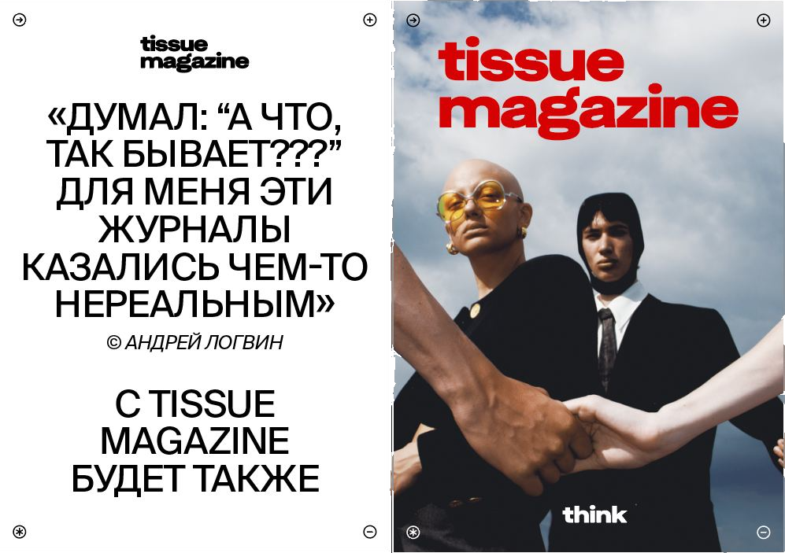
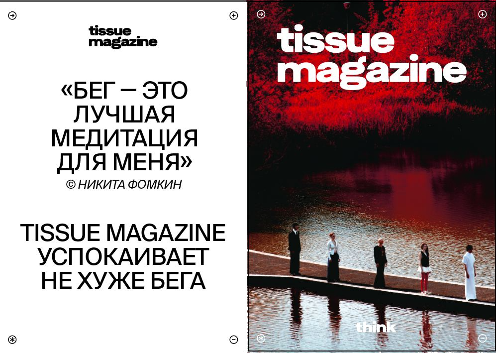
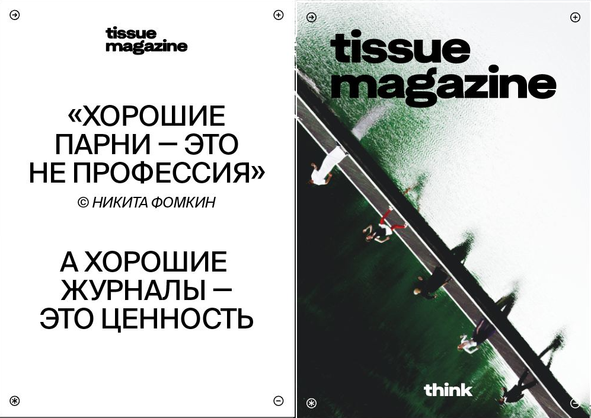
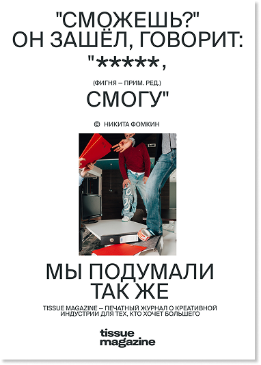

What gets built when there is no client and no brief. An ad-free magazine about the creative industry — shipped, sold, and folded on its own economics.
tissue came out of work that kept pushing past client briefs, into wider frames and context.
The bet was editorial purity: no advertising inside, a magazine that earns its place on content alone.
It ran on a wide span of the creative world.
Artists, restaurateurs, photographers, videographers, designers, theatre-makers. Anyone who makes.
The title ran across the issues, word by word. Issue four would have put the whole phrase back together —
think outside the box — about the people who live there. The trendsetters.



Issue one published and sold. Issue two written and assembled, never released.
The marketing was lean and improvised. A PR mailing reached bloggers the budget could never pay for: custom steel shelves to mount and display the magazine, sent instead of bought.
A street guerrilla — "Think I can't? Easy." — a public flex about daring to make a product this hard.
And "Make pechatka great again", a social campaign to put print back in fashion, which rallied support and sold the first issue out.

With no ad revenue, the product had to pay for itself through sales. It was built premium.
The mistake reads simple in hindsight: a premium product does not sell fast. The burn
outran the revenue, and the money ran out before issue two shipped.
A real thing, carried to a shipped product on nothing but a point
of view. And a clear read on why it failed. Not the idea.
The economics.